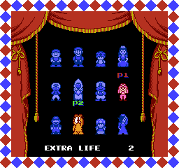
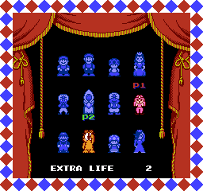
Super Mario Bros. -2 is a ROM hack that adds new ways to play the original. New characters, 2-player modes, bug fixes, and quality-of-life improvements have been added. For more info, you can read about those changes below. You can download the patch or view the source code by clicking the icons at the bottom of the page.
How to Patch
You'll need a clean PRG0 NTSC version of the SMB2 ROM. There are two different patches, one with the vanilla music and one with the prototype music. Pick the one you prefer and use it on the ROM with one of the tools listed below. I highly recommend using .bps, but both options work.
Online tool for patching (BPS and IPS)
BPS tool
IPS tool
Characters
Info
Mario
Stats: Vanilla
Special ability: None
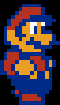
Luigi
Stats: Vanilla
Special ability: Flutter jump (vanilla behavior)
 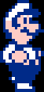
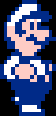
Toad
Stats: Vanilla
Special ability: Run faster with a heavy object (vanilla behavior)
 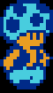
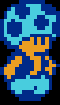
Peach
Stats: Vanilla
Special ability: Float (vanilla behavior)
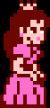 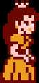Imajin
Stats: Same as Imajin in Yume Kōjō: Doki Doki Panic
Special ability: Does not shrink, damage boost at 2 hp and no lock when healing (Doki Doki Panic behavior)
 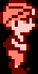
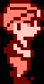
Mama
Stats: Same as Mama in Yume Kōjō: Doki Doki Panic
Special ability: Does not shrink, damage boost at 2 hp and no lock when healing (Doki Doki Panic behavior)
 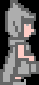
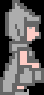
Papa
Stats: Same as Papa in Yume Kōjō: Doki Doki Panic
Special ability: Does not shrink, damage boost at 2 hp, no lock when healing and run faster with an heavy item (Doki Doki Panic behavior)
 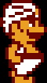
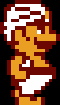
Lina
Stats: Same as Lina in Yume Kōjō: Doki Doki Panic
Special ability: Does not shrink, damage boost at 2 hp, no lock when healing and float (Doki Doki Panic behavior)


Merio
Stats: Mario stats
Special ability: Stomp enemies and bounce off them. Only works on sprites you can pickup.
Exceptions have been added to these to make the game beatable: Eggs, keys, carpets, clawgrip rocks.
Graphics by Valis emma
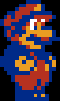 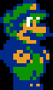Garfield
Stats: Luigi
Special ability: Every plant Garfield picks up gives him a random item. Cherries also have random effects.
Graphics by Jon Gandee & Hansungkee


Toadette
Stats: Toad, but has faster frame for picking up objects and digging.
Special ability: Can dig everywhere and run faster with a heavy object.
Cannot dig in a jar for softlock reasonsGraphics by P-P
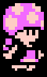 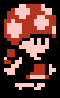Rosalina


2-Player Modes
Traditional
Players take turns. Death, warping, or level completion swaps the current player.
Tag Team
Press Select to swap players mid-game. Only the current player can trigger a swap.
Shared Control
Both players control the same character:
- Player 1: Controls movement.
- Player 2: Controls the A and B buttons.
Chaos Swap
Swaps players at random intervals without warning.
Swap range: 1 to 16 NES seconds.
Bug Fixes & Qol
- Players no longer drop the B input when performing a super jump
- The bomb explosion backgrounds are a static color now instead of a flashing light
- Fixed the Fryguy softlock
- Fixed the Autobomb corrupting memory
- Fixed missing tile animations
- Fixed enemy names in the credits
Due to the game's difficulty in certain 2-player modes, cheats are available to make the game easier. Cheats are cleared every time you go back to the title screen. Input these on the title screen with Controller 1. A sound effect will play when a cheat is successfully entered.
Always start with 20 lives:
← → ← → ↑ ↓
Start with 7 continues:
B B B B B →
Cheats
Credits
- Xkeeper0: Smb2 disassembly
- Kmck: For some of his character swap code
- Rainwarrior: LFSR algorithm
- Nesdev wiki: Input reading code
- Koopss20: Rosalina graphics
- P-P: Toadette graphics
- Jon Gandee & Hansungkee: Garfield graphics
- Valis emma: Merio graphics
- Redfeatherz: Testing & feedback